Completion of a final project for PSTAT 231 at UC Santa Barbara.
The U.S. presidential election in 2012 did not come as a surprise. Some correctly predicted the outcome of the election correctly including Nate Silver, and many speculated about his approach.
Despite the success in 2012, the 2016 presidential election came as a big surprise to many, and it underscored that predicting voter behavior is complicated for many reasons despite the tremendous effort in collecting, analyzing, and understanding many available datasets.
Your final project will be to merge census data with 2016 voting data to analyze the election outcome.
To familiarize yourself with the general problem of predicting election outcomes, read the articles linked above and answer the following questions. Limit your responses to one paragraph for each.
In general, predicting behavior has its limitations. As mentioned in the fivethirtyeight.com article, there is always going to be statistical noise and nonresponse bias to pre-election polls which is then not representative of voter turnout. For the 2016 election specifically, there may have been people who had a preference for a certain candidate during pre-election polls and perhaps changed their mind at the voting booth.
The Guardian mentions modeling voting behavior and polls, the mathematical model being: Proportion of people saying they will vote for Obama is that actual percentage + the house effect + sampling variation. Based on Wikipedia’s discussion, he published an interactive webpage that allowed readers to predictor the outcome of the election based on three variables: President Obama’s favorability ratings, the rate of GDP growth, and how conservative the Republication opponent would be. It’s doesn’t mention if he used the responses in his model, however.
As mentioned before there was high error, such as statistical noise and nonresponse bias. There could be many reasons for this, one example the article mentioned was that pollsters could have been embarrassed to admit who they were supporting. They also could have had a changed their mind about a candidate between the pre-election polls and when voting.
The project_data.RData binary file contains three datasets: tract-level 2010 census data, stored as census; metadata census_meta with variable descriptions and types; and county-level vote tallies from the 2016 election, stored as election_raw.
Some example rows of the election data are shown below:
| county | fips | candidate | state | votes |
|---|---|---|---|---|
| Los Angeles County | 6037 | Hillary Clinton | CA | 2464364 |
| Los Angeles County | 6037 | Donald Trump | CA | 769743 |
| Los Angeles County | 6037 | Gary Johnson | CA | 88968 |
| Los Angeles County | 6037 | Jill Stein | CA | 76465 |
| Los Angeles County | 6037 | Gloria La Riva | CA | 21993 |
| Cook County | 17031 | Hillary Clinton | IL | 1611946 |
The meaning of each column in election_raw is self-evident except fips. The accronym is short for Federal Information Processing Standard. In this dataset, fips values denote the area (nationwide, statewide, or countywide) that each row of data represent.
Nationwide and statewide tallies are included as rows in election_raw with county values of NA. There are two kinds of these summary rows:
fips value of US.fips value.fips=2000. Provide a reason for excluding them. Drop these observations – please write over election_raw – and report the data dimensions after removal.| county | fips | candidate | state | votes |
|---|---|---|---|---|
| NA | 2000 | Donald Trump | AK | 163387 |
| NA | 2000 | Hillary Clinton | AK | 116454 |
| NA | 2000 | Gary Johnson | AK | 18725 |
| NA | 2000 | Jill Stein | AK | 5735 |
| NA | 2000 | Darrell Castle | AK | 3866 |
| NA | 2000 | Rocky De La Fuente | AK | 1240 |
The only reason I see for exclusion is lack of county information and the fips value is identified as neither federal level (fips value of US) or state-level (fips value as the state).
Dimensions:
18345 and 5
The first few rows and columns of the census data are shown below.
| CensusTract | State | County | TotalPop | Men | Women |
|---|---|---|---|---|---|
| 1001020100 | Alabama | Autauga | 1948 | 940 | 1008 |
| 1001020200 | Alabama | Autauga | 2156 | 1059 | 1097 |
| 1001020300 | Alabama | Autauga | 2968 | 1364 | 1604 |
| 1001020400 | Alabama | Autauga | 4423 | 2172 | 2251 |
| 1001020500 | Alabama | Autauga | 10763 | 4922 | 5841 |
| 1001020600 | Alabama | Autauga | 3851 | 1787 | 2064 |
Variable descriptions are given in the metadata file. The variables shown above are:
| variable | description | type |
|---|---|---|
| CensusTract | Census tract ID | numeric |
| State | State, DC, or Puerto Rico | string |
| County | County or county equivalent | string |
| TotalPop | Total population | numeric |
| Men | Number of men | numeric |
| Women | Number of women | numeric |
Separate the rows of election_raw into separate federal-, state-, and county-level data frames:
Store federal-level tallies as election_federal.
Store state-level tallies as election_state.
Store county-level tallies as election. Coerce the fips variable to numeric.
Federal-Level Tallies (First 5 Rows):
| county | fips | candidate | state | votes |
|---|---|---|---|---|
| NA | US | Donald Trump | US | 62984825 |
| NA | US | Hillary Clinton | US | 65853516 |
| NA | US | Gary Johnson | US | 4489221 |
| NA | US | Jill Stein | US | 1429596 |
| NA | US | Evan McMullin | US | 510002 |
| NA | US | Darrell Castle | US | 186545 |
State-Level Tallies (First 5 Rows):
| county | fips | candidate | state | votes |
|---|---|---|---|---|
| NA | CA | Hillary Clinton | CA | 8753788 |
| NA | CA | Donald Trump | CA | 4483810 |
| NA | CA | Gary Johnson | CA | 478500 |
| NA | CA | Jill Stein | CA | 278657 |
| NA | CA | Gloria La Riva | CA | 66101 |
| NA | FL | Donald Trump | FL | 4617886 |
County-Level Tallies (First 5 Rows):
| county | fips | candidate | state | votes |
|---|---|---|---|---|
| Los Angeles County | 6037 | Hillary Clinton | CA | 2464364 |
| Los Angeles County | 6037 | Donald Trump | CA | 769743 |
| Los Angeles County | 6037 | Gary Johnson | CA | 88968 |
| Los Angeles County | 6037 | Jill Stein | CA | 76465 |
| Los Angeles County | 6037 | Gloria La Riva | CA | 21993 |
| Cook County | 17031 | Hillary Clinton | IL | 1611946 |
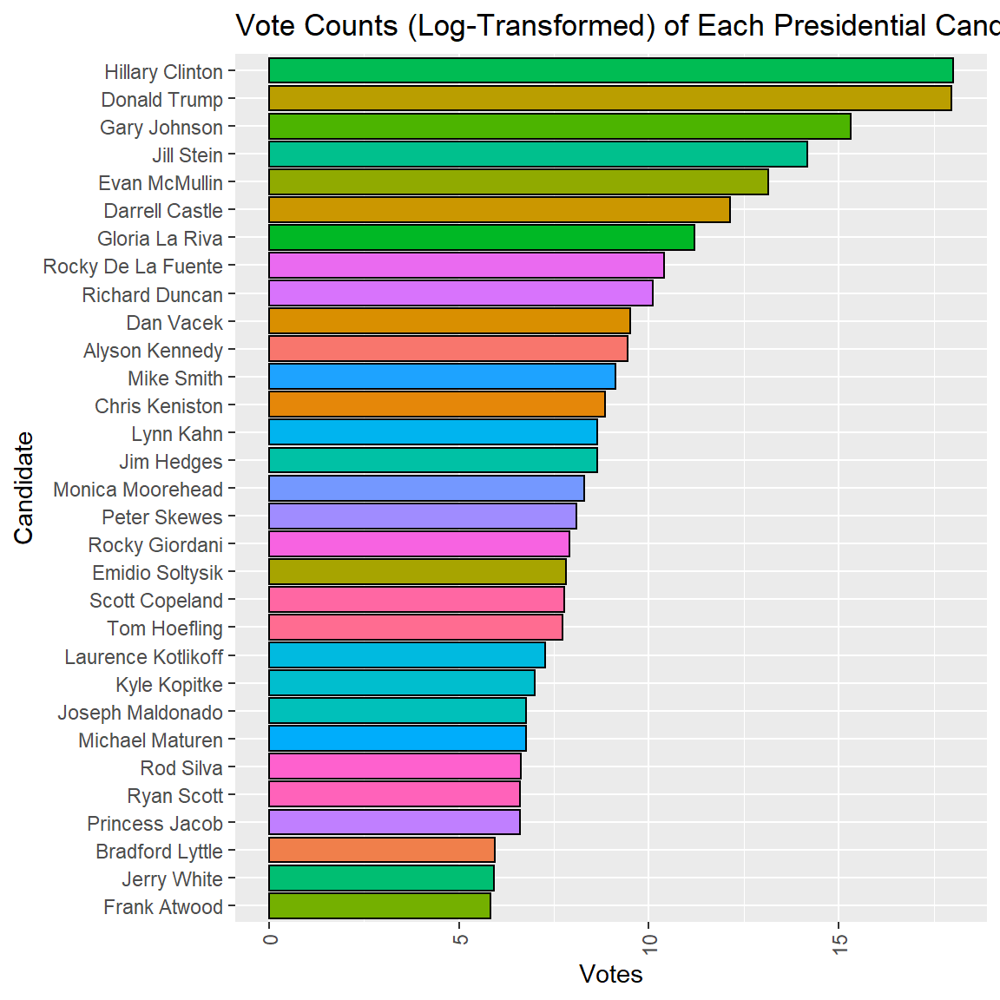
There are 31 named presidential candidates
county_winner and state_winner by taking the candidate with the highest proportion of votes. (Hint: to create county_winner, start with election, group by fips, compute total votes, and pct = votes/total. Then choose the highest row using slice_max (variable state_winner is similar).)County Winner (First 5 Counties):
| county | fips | candidate | state | votes | total | pct |
|---|---|---|---|---|---|---|
| Autauga County | 1001 | Donald Trump | AL | 18172 | 24759 | 0.734 |
| Baldwin County | 1003 | Donald Trump | AL | 72883 | 94261 | 0.7732 |
| Barbour County | 1005 | Donald Trump | AL | 5454 | 10436 | 0.5226 |
| Bibb County | 1007 | Donald Trump | AL | 6738 | 8753 | 0.7698 |
| Blount County | 1009 | Donald Trump | AL | 22859 | 25442 | 0.8985 |
| Bullock County | 1011 | Hillary Clinton | AL | 3530 | 4702 | 0.7507 |
State Winner (First 5 State):
| county | fips | candidate | state | votes | total | pct |
|---|---|---|---|---|---|---|
| NA | 46102 | Hillary Clinton | SD | 2510 | 2905 | 0.864 |
| NA | AK | Donald Trump | AK | 163387 | 309407 | 0.5281 |
| NA | AL | Donald Trump | AL | 1318255 | 2101660 | 0.6272 |
| NA | AR | Donald Trump | AR | 684872 | 1130635 | 0.6057 |
| NA | AZ | Donald Trump | AZ | 1252401 | 2554240 | 0.4903 |
| NA | CA | Hillary Clinton | CA | 8753788 | 14060856 | 0.6226 |
Here you’ll generate maps of the election data using ggmap. The .Rmd file for this document contains codes to generate the following map.
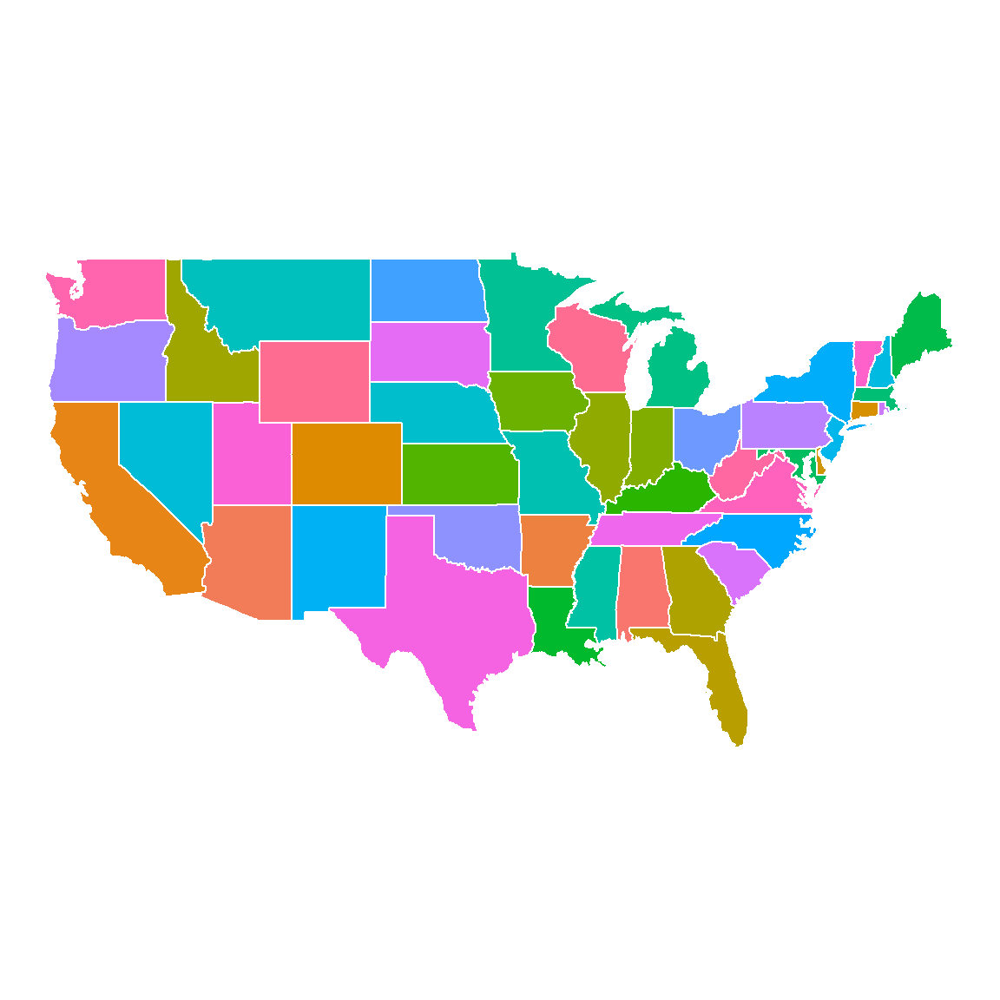
map_data("county") and color by county.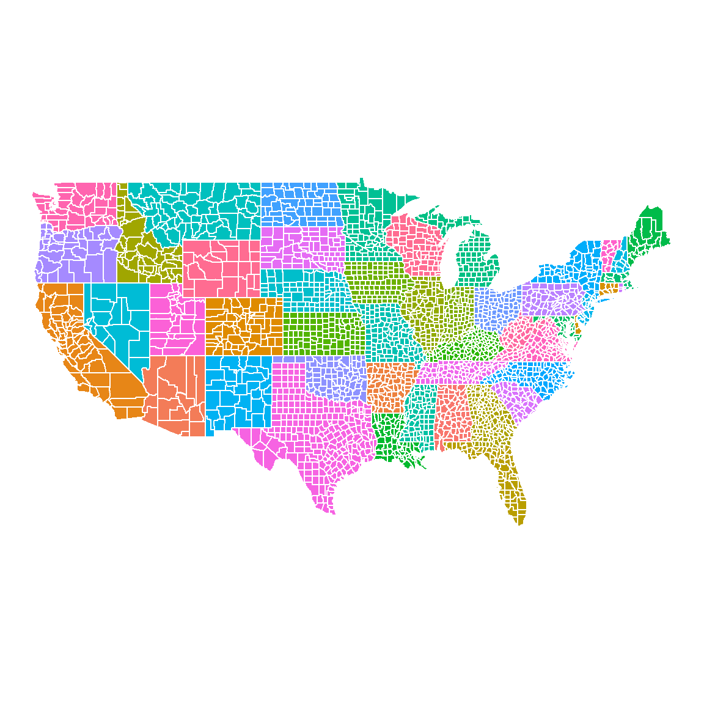
In order to map the winning candidate for each state, the map data (states) must be merged with with the election data (state_winner).
The function left_join() will do the trick, but needs to join the data frames on a variable with values that match. In this case, that variable is the state name, but abbreviations are used in one data frame and the full name is used in the other.
fips variable in the states data frame with values that match the fips variable in election_federal.
First 5 rows in the states data frame:
| long | lat | group | order | region | subregion | fips |
|---|---|---|---|---|---|---|
| -87.46 | 30.39 | 1 | 1 | alabama | NA | AL |
| -87.48 | 30.37 | 1 | 2 | alabama | NA | AL |
| -87.53 | 30.37 | 1 | 3 | alabama | NA | AL |
| -87.53 | 30.33 | 1 | 4 | alabama | NA | AL |
| -87.57 | 30.33 | 1 | 5 | alabama | NA | AL |
| -87.59 | 30.33 | 1 | 6 | alabama | NA | AL |
left_join(df1, df2) takes all the rows from df1 and looks for matches in df2. For each match, left_join() appends the data from the second table to the matching row in the first; if no matching value is found, it adds missing values.left_join to merge the tables and use the result to create a map of the election results by state. Your figure will look similar to this state level New York Times map. (Hint: use scale_fill_brewer(palette="Set1") for a red-and-blue map.)fips (First 5 rows):
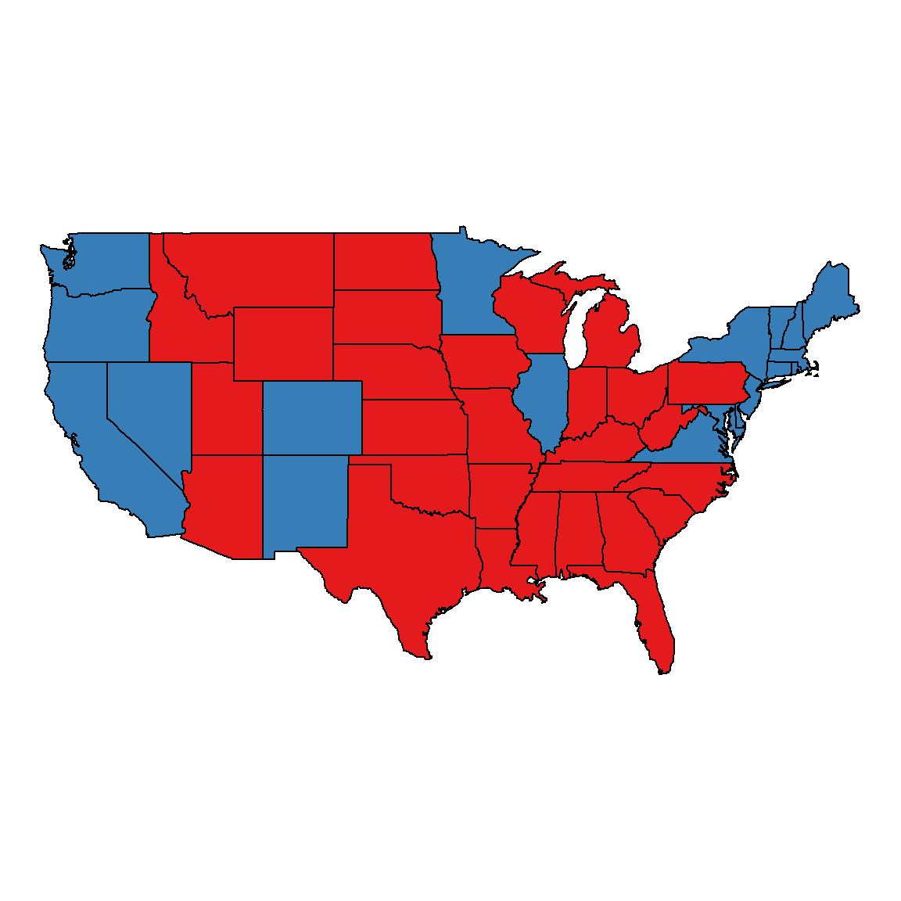
fips value, so to create one, use information from maps::county.fips: split the polyname column to region and subregion using tidyr::separate, and use left_join() to combine county.fips with the county-level map data. Then construct the map. Your figure will look similar to county-level New York Times map.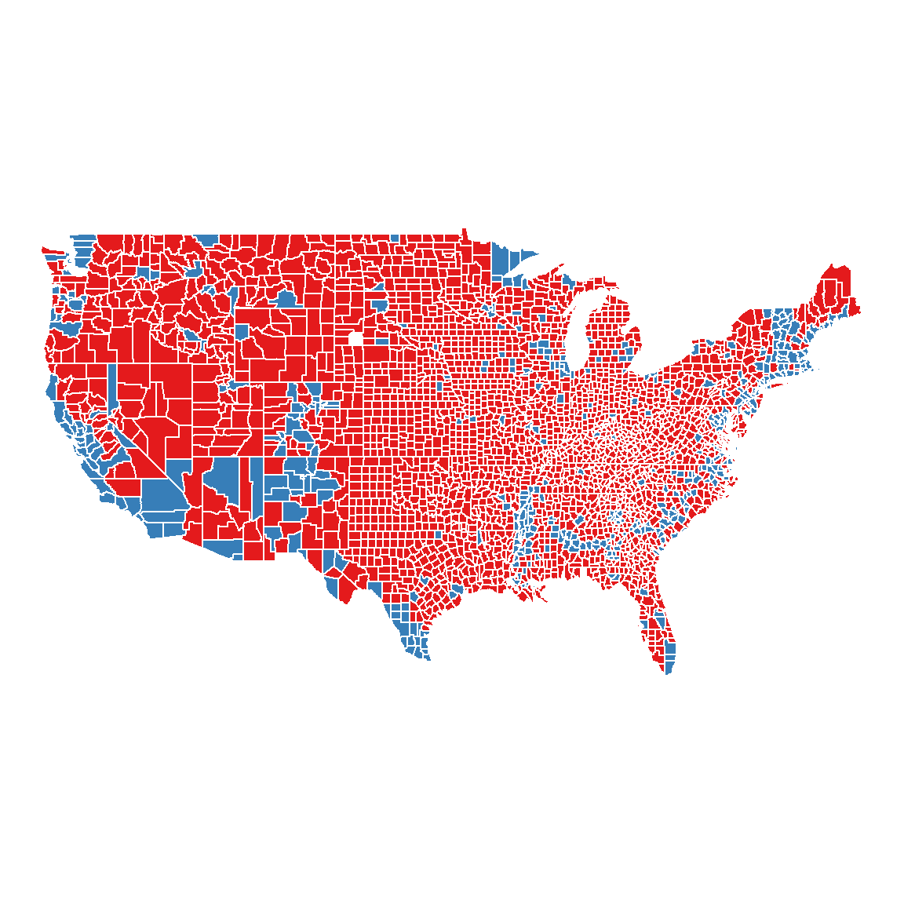
census data. Many exit polls noted that demographics played a big role in the election. If you need a starting point, use this Washington Post article and this R graph gallery for ideas and inspiration.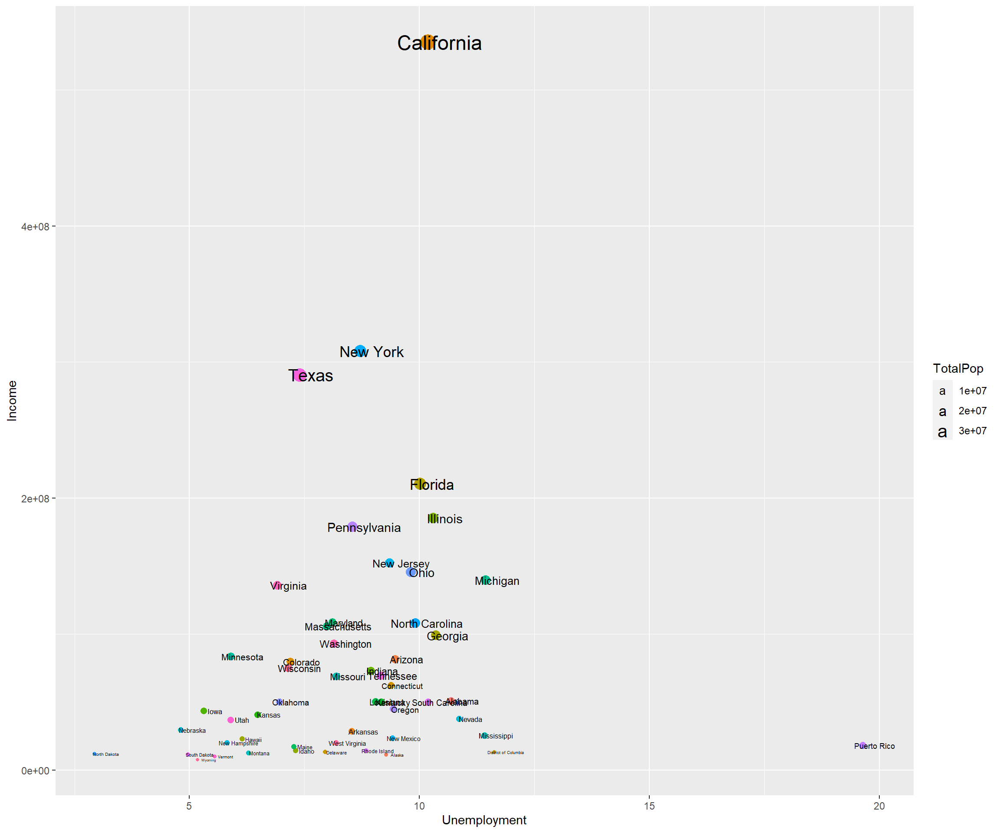
census data contains high resolution information (more fine-grained than county-level). Aggregate the information into county-level data by computing population-weighted averages of each attribute for each county by carrying out the following steps:Clean census data, saving the result as census_del:
census with missing values;Men, Employed, and Citizen to percentages;Minority variable by combining Hispanic, Black, Native, Asian, Pacific, and remove these variables after creating Minority; andWalk, PublicWork, and Construction.census_subct:
census_del by State and County;add_tally() to compute CountyPop;TotalPop/CountyTotal;census_ct: group the sub-county data census_subct by state and county and compute popluation-weighted averages of each variable by taking the sum (since the variables were already transformed by the population weights)census_ct.| State | County | Men | Women | White | Citizen | Income | IncomeErr |
|---|---|---|---|---|---|---|---|
| Alabama | Autauga | 48.43 | 3349 | 75.79 | 73.75 | 51696 | 7771 |
| Alabama | Baldwin | 48.85 | 3934 | 83.1 | 75.69 | 51074 | 8745 |
| Alabama | Barbour | 53.83 | 1492 | 46.23 | 76.91 | 32959 | 6031 |
| Alabama | Bibb | 53.41 | 2930 | 74.5 | 77.4 | 38887 | 5662 |
| Alabama | Blount | 49.41 | 3562 | 87.85 | 73.38 | 46238 | 8696 |
| Alabama | Bullock | 53.01 | 1968 | 22.2 | 75.45 | 33293 | 9000 |
| IncomePerCap | IncomePerCapErr | Poverty | ChildPoverty | Professional |
|---|---|---|---|---|
| 24974 | 3434 | 12.91 | 18.71 | 32.79 |
| 27317 | 3804 | 13.42 | 19.48 | 32.73 |
| 16824 | 2430 | 26.51 | 43.56 | 26.12 |
| 18431 | 3074 | 16.6 | 27.2 | 21.59 |
| 20532 | 2052 | 16.72 | 26.86 | 28.53 |
| 17580 | 3111 | 24.5 | 37.29 | 19.55 |
| Service | Office | Production | Drive | Carpool | Transit | OtherTransp |
|---|---|---|---|---|---|---|
| 17.17 | 24.28 | 17.16 | 87.51 | 8.781 | 0.09526 | 1.306 |
| 17.95 | 27.1 | 11.32 | 84.6 | 8.959 | 0.1266 | 1.444 |
| 16.46 | 23.28 | 23.32 | 83.33 | 11.06 | 0.4954 | 1.622 |
| 17.96 | 17.47 | 23.74 | 83.43 | 13.15 | 0.5031 | 1.562 |
| 13.94 | 23.84 | 20.1 | 84.85 | 11.28 | 0.3626 | 0.4199 |
| 14.92 | 20.17 | 25.74 | 74.77 | 14.84 | 0.7732 | 1.824 |
| WorkAtHome | MeanCommute | Employed | PrivateWork | SelfEmployed | FamilyWork |
|---|---|---|---|---|---|
| 1.836 | 26.5 | 43.44 | 73.74 | 5.433 | 0 |
| 3.85 | 26.32 | 44.05 | 81.28 | 5.909 | 0.3633 |
| 1.502 | 24.52 | 31.92 | 71.59 | 7.15 | 0.08977 |
| 0.7315 | 28.71 | 36.69 | 76.74 | 6.638 | 0.3942 |
| 2.265 | 34.84 | 38.45 | 81.83 | 4.229 | 0.3565 |
| 3.1 | 28.63 | 36.2 | 79.09 | 5.274 | 0 |
| Unemployment | Minority |
|---|---|
| 7.734 | 22.54 |
| 7.59 | 15.21 |
| 17.53 | 51.94 |
| 8.163 | 24.17 |
| 7.7 | 10.59 |
| 17.89 | 76.54 |
On election day, I was in Los Angeles, CA. Taking the average values of some of the variables to look at overall California demographics, it looks like minorities make up 70% of LA, and 40% of California. Men and Unemployement is unchanged. Having lived here a long time, I am not surprised at the demographics. LA is much more diverse than the rest of California.
| State | County | Men | Women | White | Citizen | Income | IncomeErr |
|---|---|---|---|---|---|---|---|
| California | Los Angeles | 49.2 | 2460 | 26.91 | 60.14 | 61385 | 10572 |
| IncomePerCap | IncomePerCapErr | Poverty | ChildPoverty | Professional |
|---|---|---|---|---|
| 28390 | 4002 | 18.23 | 23.51 | 34.01 |
| Service | Office | Production | Drive | Carpool | Transit | OtherTransp |
|---|---|---|---|---|---|---|
| 19.5 | 24.67 | 13.66 | 72.9 | 10.27 | 6.952 | 2.22 |
| WorkAtHome | MeanCommute | Employed | PrivateWork | SelfEmployed | FamilyWork |
|---|---|---|---|---|---|
| 4.912 | 30.15 | 46.29 | 79.12 | 9.191 | 0.1576 |
| Unemployment | Minority |
|---|---|
| 10.13 | 70.66 |
| State | Men | Women | White | Citizen | Income | IncomeErr |
|---|---|---|---|---|---|---|
| California | 50.43 | 2665 | 55.65 | 68.23 | 59031 | 9828 |
| IncomePerCap | IncomePerCapErr | Poverty | ChildPoverty | Professional |
|---|---|---|---|---|
| 28014 | 3977 | 16.71 | 20.8 | 33.5 |
| Service | Office | Production | Drive | Carpool | Transit | OtherTransp |
|---|---|---|---|---|---|---|
| 20.61 | 22.33 | 10.84 | 73.18 | 11.46 | 2.768 | 2.671 |
| WorkAtHome | MeanCommute | Employed | PrivateWork | SelfEmployed | FamilyWork |
|---|---|---|---|---|---|
| 6.388 | 25.17 | 41.61 | 70.23 | 9.499 | 0.4364 |
| Unemployment | Minority |
|---|---|
| 10.95 | 41.26 |
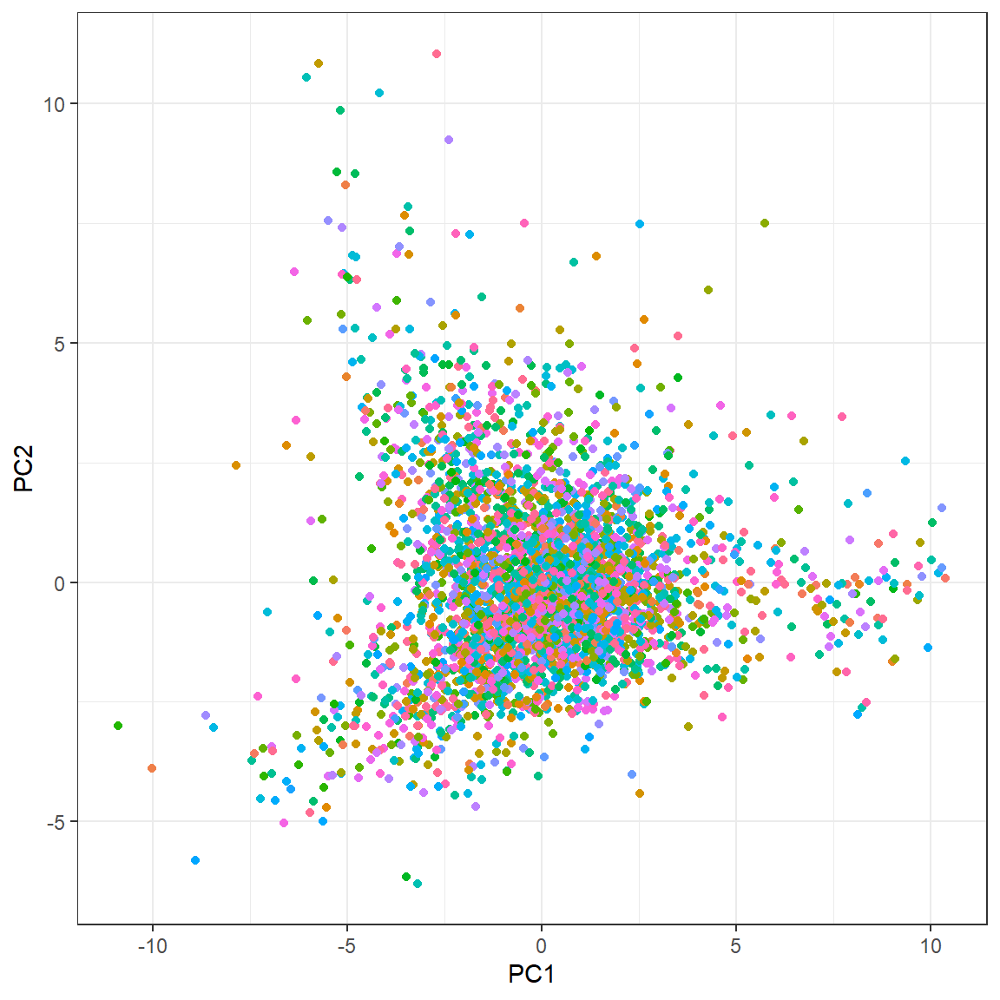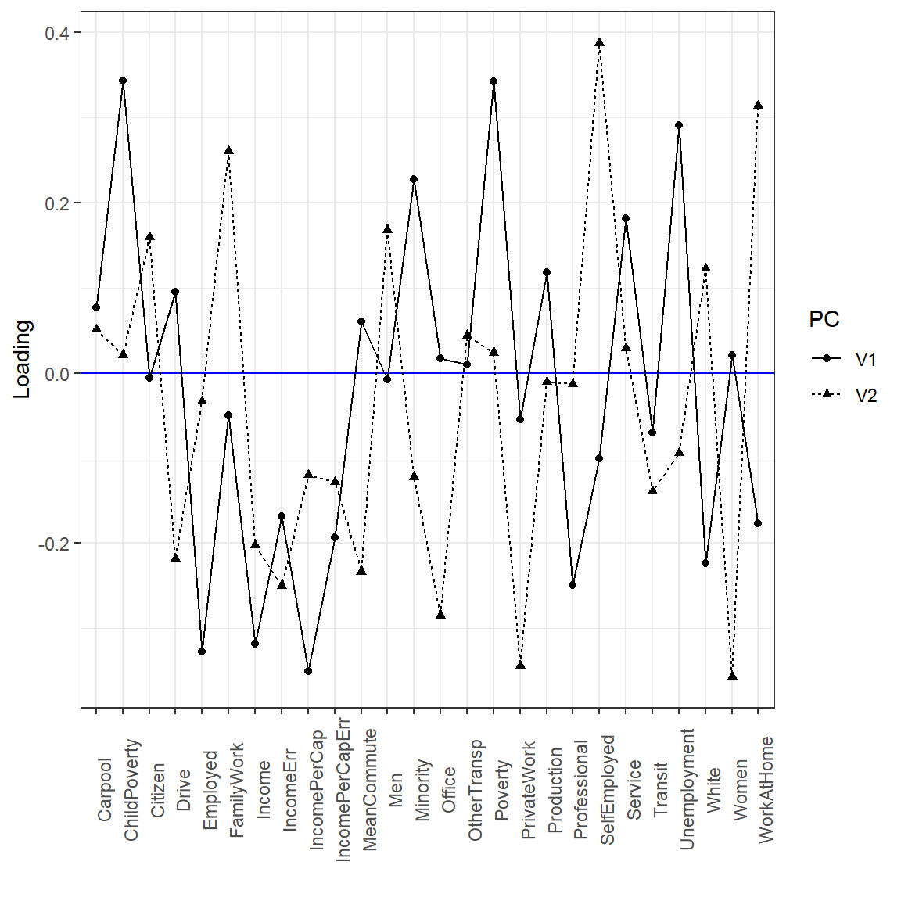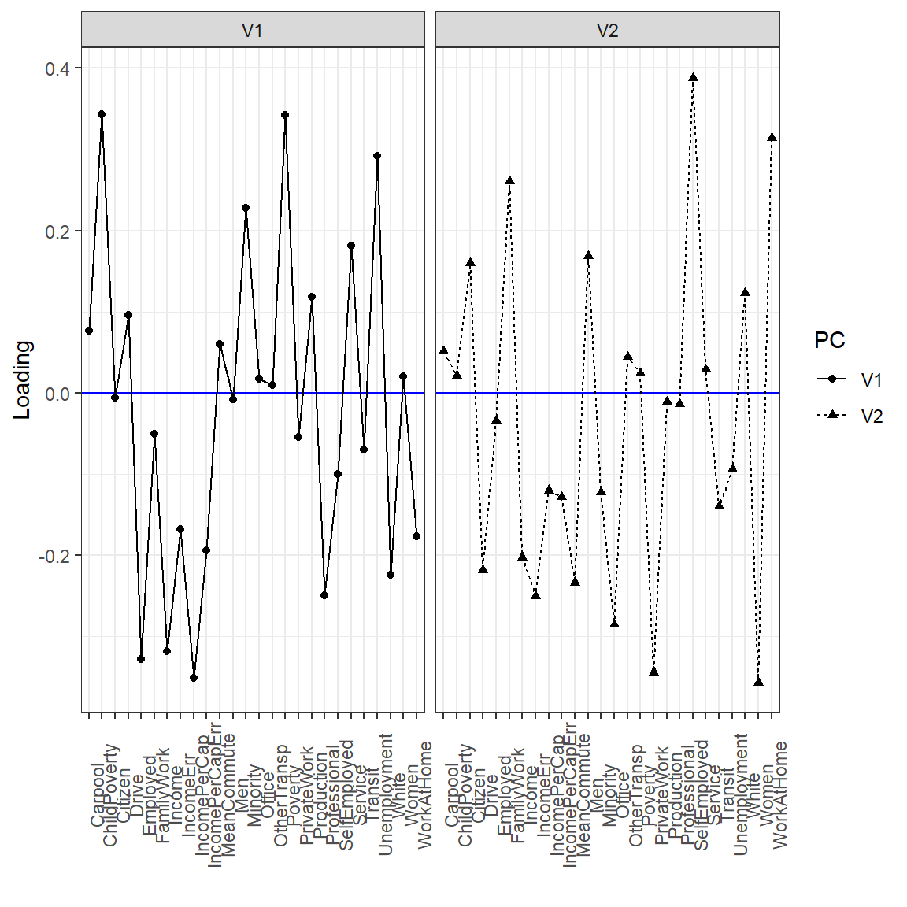
The first PC has a high percentage of children under poverty level, a high percentage of people under poverty level, and high percentage of those unemployed. The first PC also has low income per capital, low percentage of those employed (16+), and low median household income. I would label this principal component as Under Poverty Level.
The second PC has a high percentage of those who are self-employed, a high percentage of those working at home, and high percentage of those working in unpaid family work. The second PC also has low number of women, low percentage of working in private industry, and low percentage of employed in office jobs. I would label this principal component as Working Class - Family Oriented.
Sub-county Level:
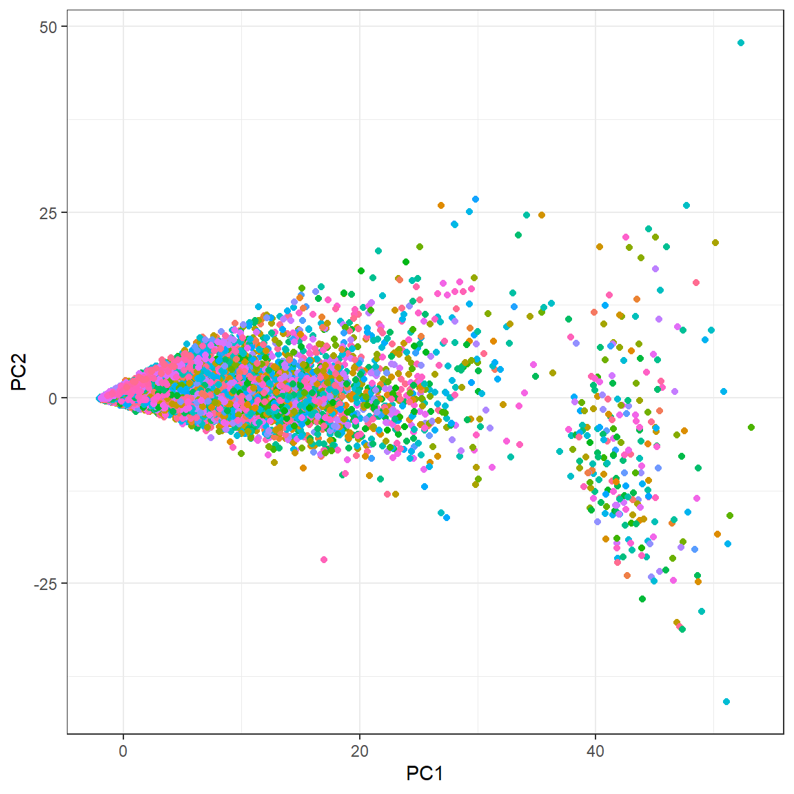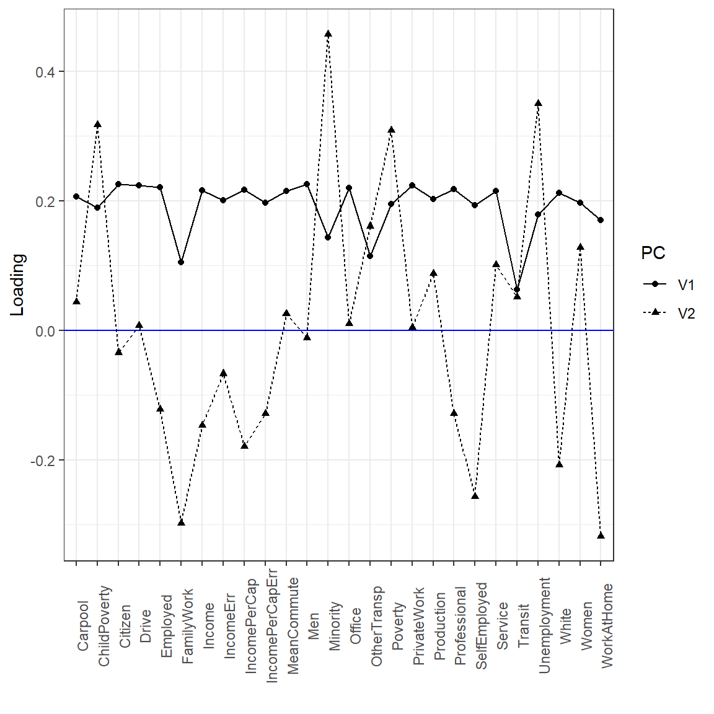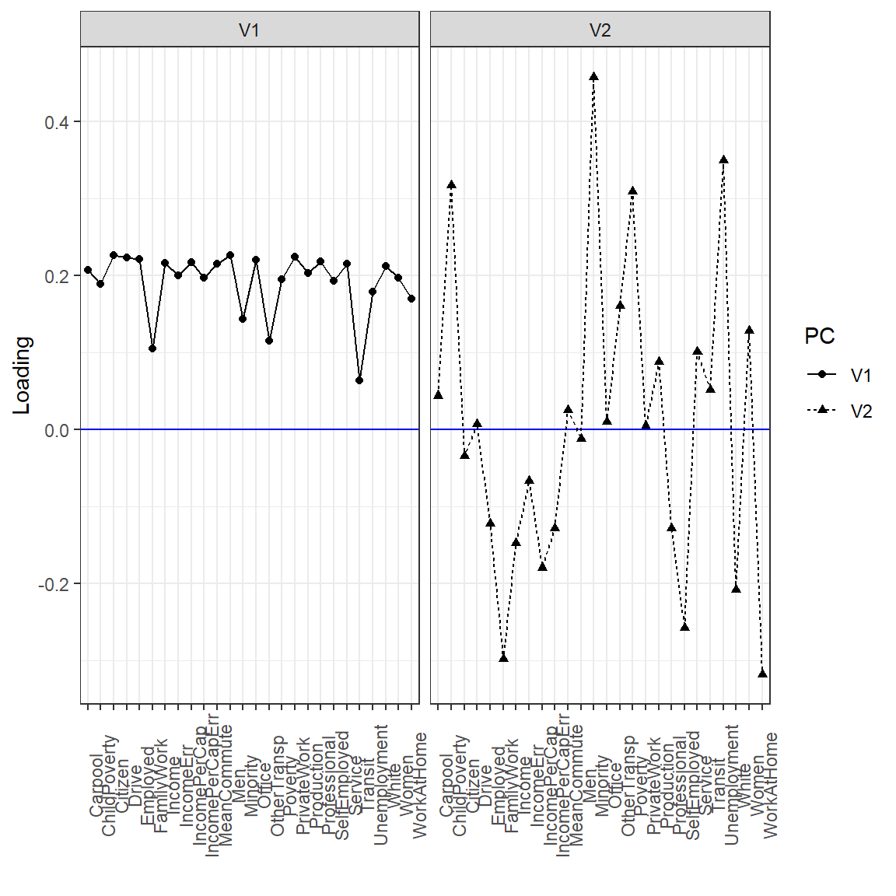
This PC is interesting because all 26 variables are positive and relatively high, where most have loadings greater than .20. The first PC has a high percentage of Men, a high number of citizens, high percentage of those employed in private industry, high percentage of those who commute alone in a car, and a high percentage of those employed (+16). I would label this principal component as Working-Class.
The second PC has a high percentage of minorities, a high percentage of unemployment, and high percentage of child poverty and under poverty level. The second PC also has low percentage of those who work from home, low percentage of inpaid family work, and low percentage of those who are self-employed. I would label this principal component as Under Poverty Level.
It’s usually important to both center and scale your variables as they are most likely not on the same metric. As in this case, I center and scaled the dataset because some variables are count and others are percentages. Either way, it doesn’t hurt.
County Level:
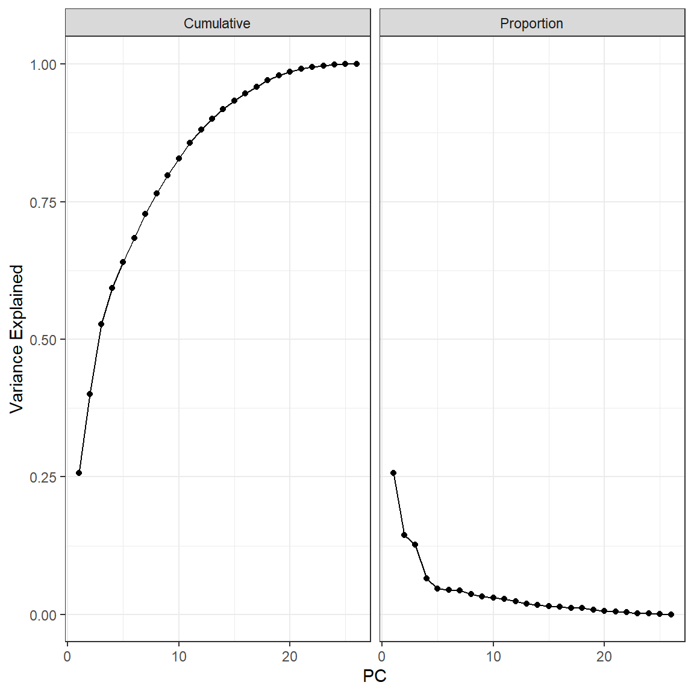
At least 13 PCs are needed to capture 90% of the variance for the county analysis.
Sub-County Level:
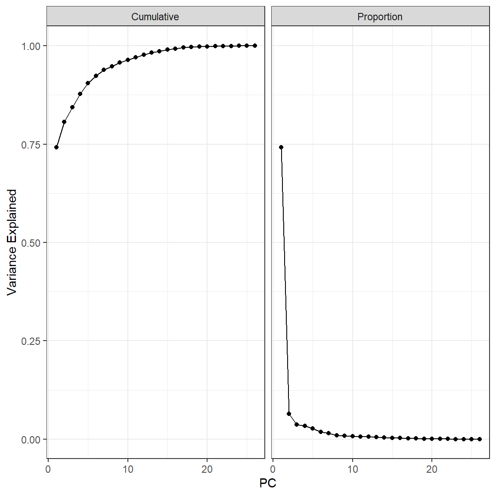
At least 7 PCs are needed to capture 90% of the variance for the sub-county analysis.
census_ct, perform hierarchical clustering with complete linkage. Cut the tree to partition the observations into 10 clusters. Re-run the hierarchical clustering algorithm using the first 5 principal components the county-level data as inputs instead of the original features. Compare and contrast the results. For both approaches investigate the cluster that contains San Mateo County. Which approach seemed to put San Mateo County in a more appropriate cluster? Comment on what you observe and discuss possible explanations for these observations.| clusters | n |
|---|---|
| cluster 1 | 2307 |
| cluster 2 | 779 |
| cluster 3 | 67 |
| cluster 4 | 8 |
| cluster 5 | 20 |
| cluster 6 | 4 |
| cluster 7 | 3 |
| cluster 8 | 3 |
| cluster 9 | 23 |
| cluster 10 | 4 |
1
| clusters | n |
|---|---|
| cluster 1 | 1950 |
| cluster 2 | 631 |
| cluster 3 | 312 |
| cluster 4 | 57 |
| cluster 5 | 8 |
| cluster 6 | 167 |
| cluster 7 | 43 |
| cluster 8 | 7 |
| cluster 9 | 40 |
| cluster 10 | 3 |
3
It seems that the counties in the PC cluster are more evenly spread out than using the entire dataset. When using the first 5 principal components, we are capturing 64% of the variance in the county dataset with only five variables. Because of the smaller dimension, it may be more effective in clustering the counties as opposed to using 26 variables with the full dataset. It makes sense that San Mateo county is put into cluster 1 with the full dataset as most counties are grouped there. Thus, we may want to rely on the cluster that used the PCs, where San Mateo is in cluster 3.
In order to train classification models, we need to combine county_winner and census_ct data. This seemingly straightforward task is harder than it sounds. Codes are provided in the .Rmd file that make the necessary changes to merge them into election_cl for classification.
After merging the data, partition the result into 80% training and 20% testing partitions.
call: tree(formula = as.factor(candidate) ~ ., data = train, control = tree_opts, split = "deviance")
type:
Classification tree:
used: 4, 2, 26, 9, 21, 13, 3, 5, 8, 16, 18, 14, 15, 24, 6, 20, 10, 22, 17, 12, 23, 19 and 25
size: 84
df: 2373
dev: 99.29
misclass: 21 and 2457
Tree before pruning:
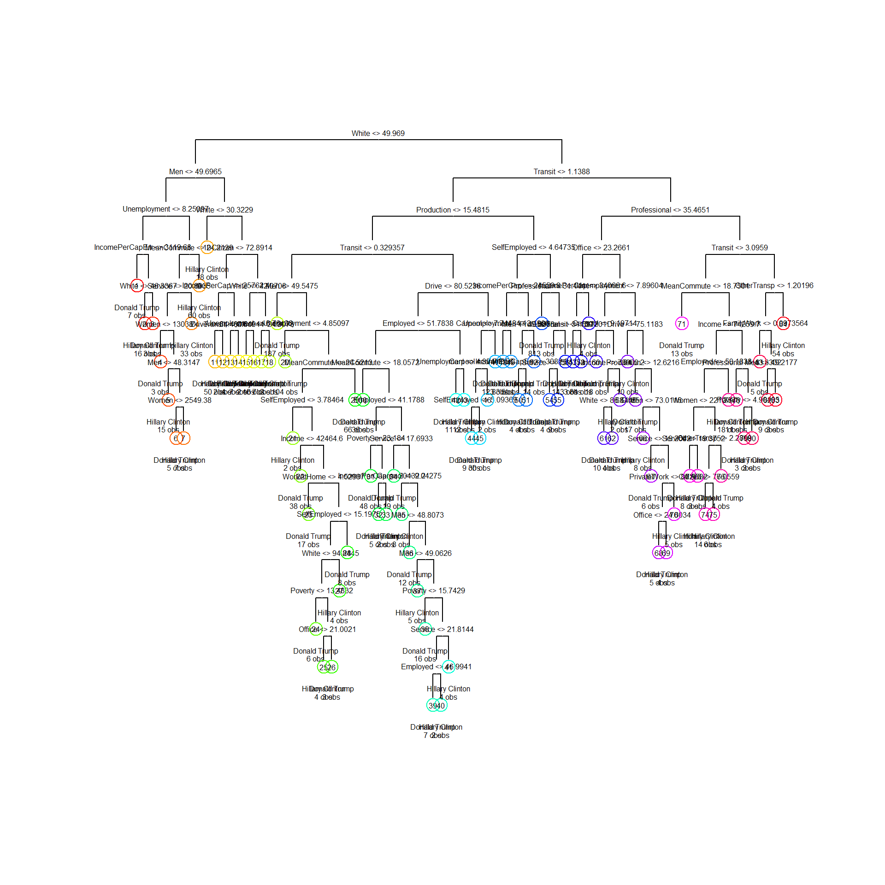
Add cost-complexity pruning:
call: snip.tree(tree = t_small, nodes = c(4L, 14L, 5L, 15L, 6L))
type:
Classification tree:
used: 4, 2, 18 and 12
size: 5
df: 2452
dev: 1108
misclass: 200 and 2457
Tree after pruning:
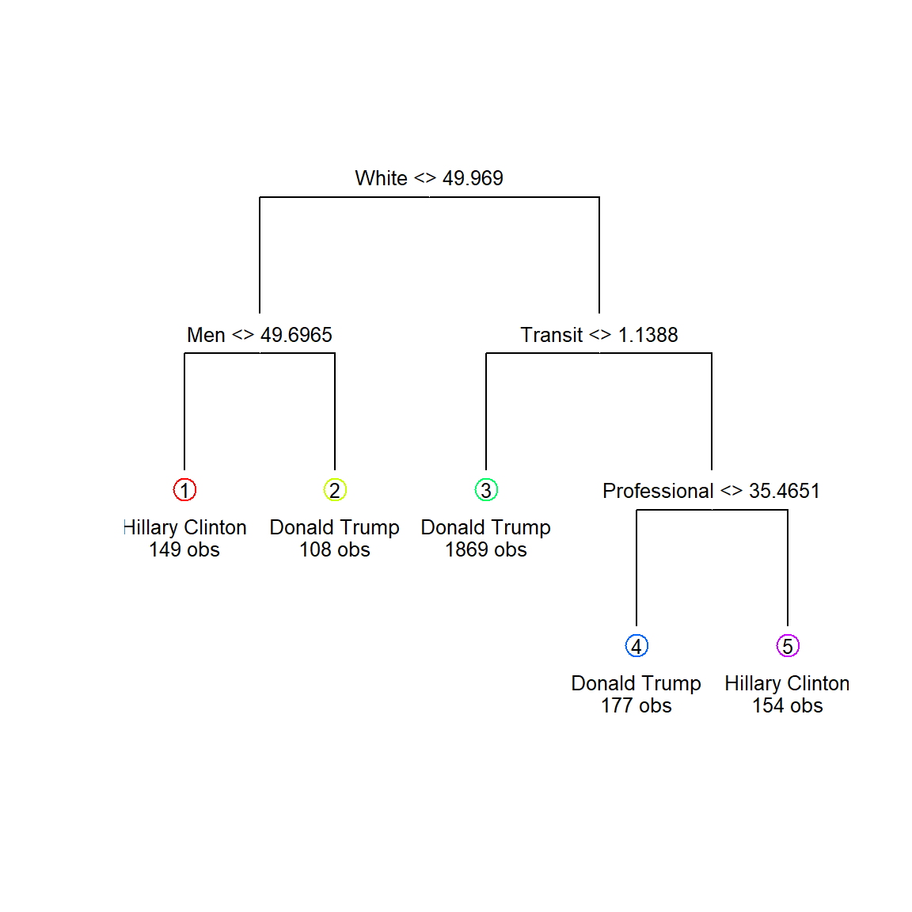
Classification Errors on Test Partition - Before Pruning:
| Donald Trump | Hillary Clinton | |
|---|---|---|
| Donald Trump | 0.9496 | 0.05039 |
| Hillary Clinton | 0.3505 | 0.6495 |
Classification Errors on Test Partition - After Pruning:
| Donald Trump | Hillary Clinton | |
|---|---|---|
| Donald Trump | 0.9438 | 0.0562 |
| Hillary Clinton | 0.4433 | 0.5567 |
After training a decision tree before pruning, the resulting classification tree had 84 terminal nodes and a misclassification error rate of 0.0085. There were 23 variables used. After pruning the classification tree, now there are 5 terminal nodes and a misclassifcation error rate of 0.0814. There were four variables used: White, Men, Transit, Professional. Similar to the infographic, it’s not surprising that “White” is used as the first splitting variable and Men is one of the second spliting variables. Counties that are less than 49.969% White and less than 49.6965 Male were likely to vote for Hillary Clinton. Which makes sense given the demographics of the election results, however it isn’t very telling as splitting on almost 50% isn’t much information. On the other side of the decision tree, counties that are more than almost 50% white, more than 1.138% use public transportation, and more than 35.4651% are employed in management positions voted for Hillary. It’s interesting that counties that have more than 1.138% of people using public transit are likely to vote Trump. It may indicate that the model needs some adjustments since the misclassification error rate is higher for this model.
| Estimate | Std. Error | z value | Pr(>|z|) | |
|---|---|---|---|---|
| (Intercept) | -12.3 | 9.576 | -1.284 | 0.199 |
| Men | -0.03202 | 0.05466 | -0.5858 | 0.558 |
| Women | 4.849e-05 | 0.0001675 | 0.2895 | 0.7722 |
| White | -0.1876 | 0.06417 | -2.924 | 0.003453 |
| Citizen | 0.1139 | 0.02934 | 3.881 | 0.0001038 |
| Income | -5.835e-05 | 2.752e-05 | -2.12 | 0.03397 |
| IncomeErr | 4.269e-05 | 6.807e-05 | 0.6272 | 0.5306 |
| IncomePerCap | 0.00019 | 6.601e-05 | 2.879 | 0.003991 |
| IncomePerCapErr | -0.0002421 | 0.0001405 | -1.723 | 0.08484 |
| Poverty | 0.04498 | 0.04267 | 1.054 | 0.2918 |
| ChildPoverty | -0.004893 | 0.02611 | -0.1874 | 0.8513 |
| Professional | 0.2568 | 0.03852 | 6.665 | 2.638e-11 |
| Service | 0.3509 | 0.04974 | 7.055 | 1.727e-12 |
| Office | 0.1209 | 0.0466 | 2.595 | 0.009448 |
| Production | 0.1849 | 0.04262 | 4.337 | 1.444e-05 |
| Drive | -0.2236 | 0.04639 | -4.821 | 1.426e-06 |
| Carpool | -0.2164 | 0.06138 | -3.525 | 0.0004228 |
| Transit | 0.04788 | 0.09227 | 0.5189 | 0.6038 |
| OtherTransp | -0.09843 | 0.1018 | -0.9668 | 0.3337 |
| WorkAtHome | -0.1356 | 0.07447 | -1.821 | 0.06868 |
| MeanCommute | 0.05417 | 0.025 | 2.167 | 0.03022 |
| Employed | 0.196 | 0.03376 | 5.807 | 6.359e-09 |
| PrivateWork | 0.07211 | 0.0223 | 3.233 | 0.001224 |
| SelfEmployed | 0.01535 | 0.04992 | 0.3076 | 0.7584 |
| FamilyWork | -0.879 | 0.413 | -2.128 | 0.03334 |
| Unemployment | 0.1742 | 0.04075 | 4.275 | 1.908e-05 |
| Minority | -0.06081 | 0.06186 | -0.9831 | 0.3256 |
(Dispersion parameter for binomial family taken to be 1 )
| Null deviance: | 2071.8 on 2456 degrees of freedom |
| Residual deviance: | 841.2 on 2430 degrees of freedom |
Errors (Test Partition):
| No | Yes | |
|---|---|---|
| Donald Trump | 0.9593 | 0.0407 |
| Hillary Clinton | 0.3299 | 0.6701 |
Significant predictors of candidate are White, Citizen, Income, IncomePerCap, Professional, Service, Office, Production, Drive, Carpool, MeanCommute, Employed, PrivateWork, FamilyWork, and Unemployement. Only one of the variables overlap with the variables chosen in the pruned decision tree which is inconsistent.
The probability of a county voting for Donald Trump increases by an estimated 0.1139 among counties with Citizens, after accounting for all other predictors.
The probability of a county voting for Donald Trump decreases by an estimated -.879 among counties with unpaid family workers, after accounting for all other predictors.
Yes, the results in Los Angeles county (Hillary Clinton) matched the predicted results.
Decision Tree:
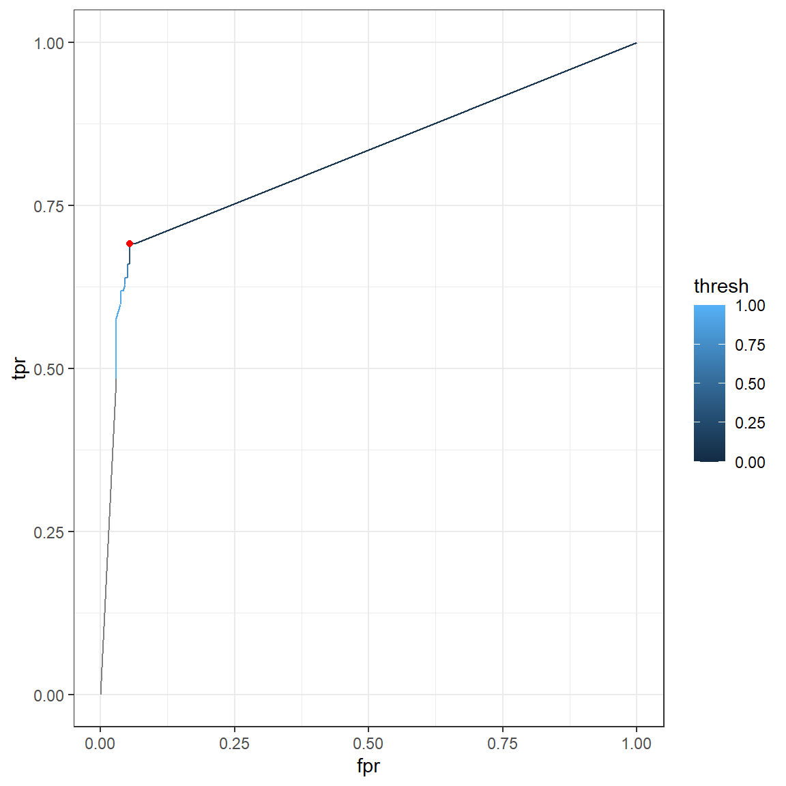
Logistic Regression:
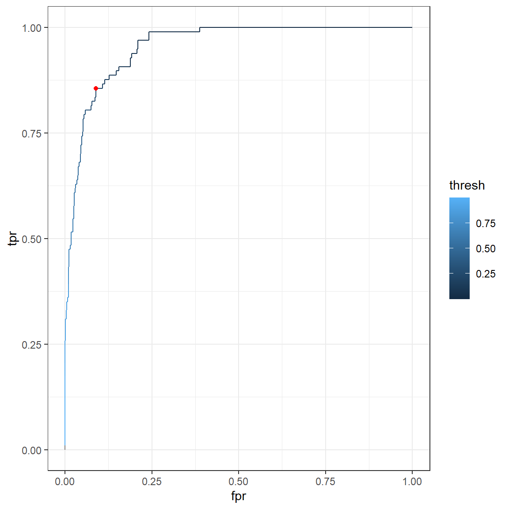
Both ROC curves look very different, with the logistic curve looking cleaner and has a higher optimal threshold. Both analyses have pros and cons and different classifiers are more appropriate for answering different kinds of questions about the election. Regarding decision trees, as we saw in the output, they are intuitive and easy to implement visualize and interpret. They also have the ability to be pruned by cost complexity. However, they are sensitive to small changes in the data, have high variance, and could fail if they separation in the feature space is hard to approximate. I think working with this scale of data is difficult to implement decision trees with because there is a lot of variability in data. Regarding logistic regression, they are interpretable, flexible, and can take in a large number of predictors. However, like decision trees, they can fail if data are separated in the feature space.
As mentioned previously, both analyses have pros and cons and different classifiers are more appropriate for answering different kinds of questions about the election. In this example, it is shown that the logistic model performed better, providing a better misclassification error rate. I think the model would perform even better with theory-based predictors as that can influence the model, more predictors doesn’t necessarily mean better.
I like the idea of using PC components to reevaluate the classification methods used. The minimum number of PCs needed to capture 90% of the variance for county data is 13, however, using 13 components makes interpretation tricky, as evaluating and labeling all 13 will be extremely time-consulting. To assess differences in bias-variance trade off between using PC and raw data, I will rerun both the decision tree analysis and the logistic regress using the first 4 principal components to predict the election results and compare.
Rerun PCs with combined county_winner column for easier wrangling:
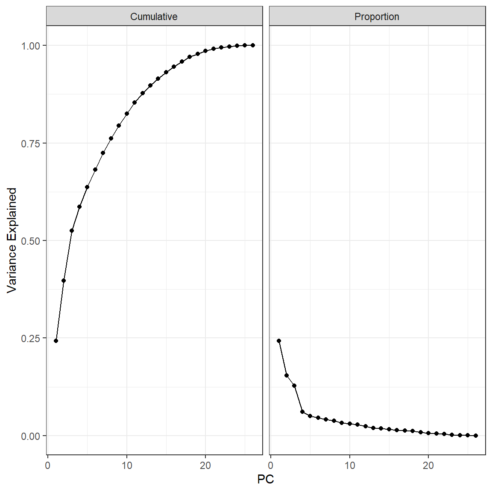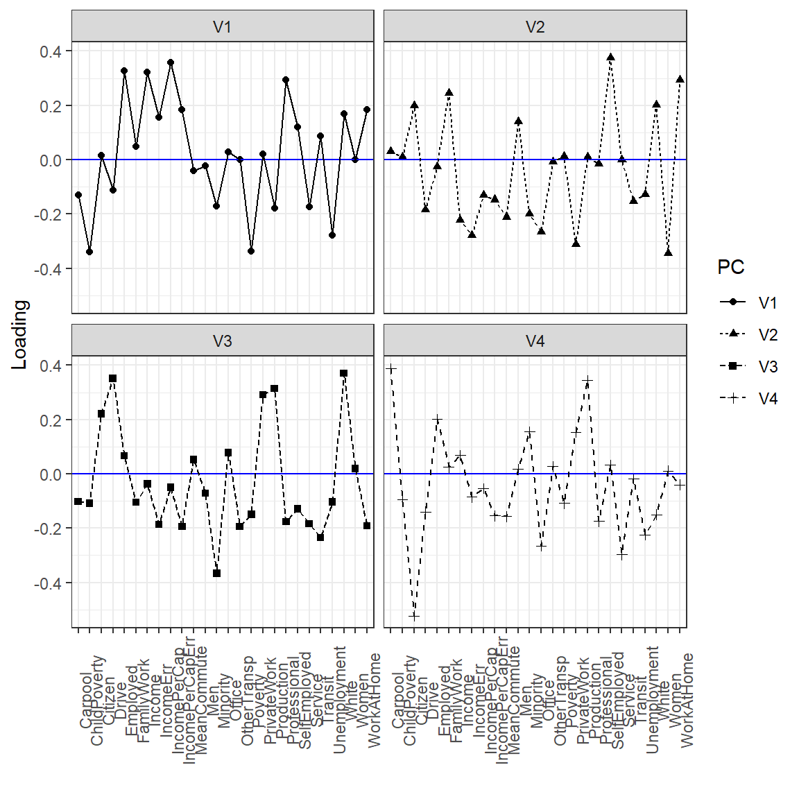
Note: Eigenvalues are slightly off because some observations were removed in the process of combining county_winner and census_ct but they are generally the same.
PC 1/Affluent: High IncomePerCap, Employed, Income, and Professional. Low Child Poverty, Poverty, and Unemployment.
PC 2/Family Oriented: High SelfEmployed, WorkAtHome, and FamilyWork. Low Women, PrivateWork, IncomeErr.
PC 3/Working Class in Suburb: High White, Drive, Production, and Private Work. Low Minority, and Transit.
PC 4/Working Class in City : High Carpool, Production, Employed. Low Citizen, Service, Office.
Decision Tree:
call: tree(formula = as.factor(candidate) ~ ., data = train, control = tree_opts, split = "deviance")
type:
Classification tree:
size: 56
df: 2401
dev: 778.3
misclass: 157 and 2457
Tree before pruning:
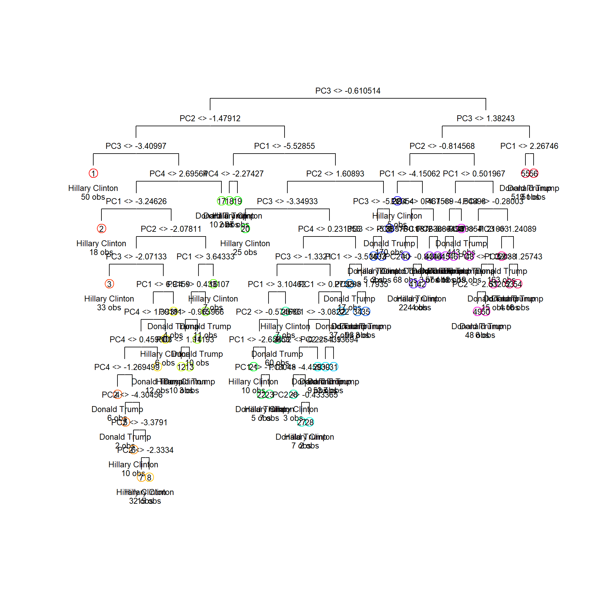
Add cost-complexity pruning:
call: snip.tree(tree = t_small, nodes = c(10L, 7L, 54L, 55L, 26L, 91L, 23L, 25L, 90L, 9L))
type:
Classification tree:
size: 13
df: 2444
dev: 1147
misclass: 235 and 2457
Tree after pruning:
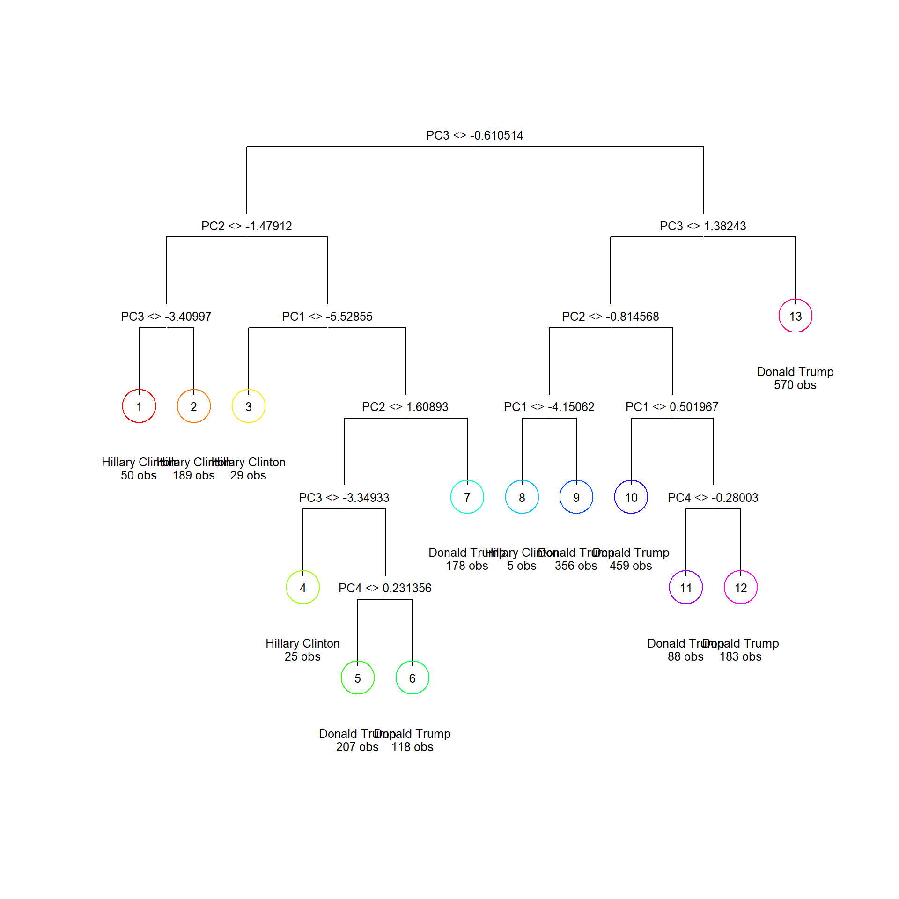
Classification Errors on Test Partition - Before Pruning:
| Donald Trump | Hillary Clinton | |
|---|---|---|
| Donald Trump | 0.9535 | 0.04651 |
| Hillary Clinton | 0.4948 | 0.5052 |
Classification Errors on Test Partition - After Pruning:
| Donald Trump | Hillary Clinton | |
|---|---|---|
| Donald Trump | 0.9341 | 0.06589 |
| Hillary Clinton | 0.5155 | 0.4845 |
After training a decision tree before pruning, the resulting classification tree had 56 terminal nodes and a misclassification error rate of 0.0639. The four PCs were used. Already, we see that the misclassifciation error is much higher than using the full dataset shown earlier. After pruning the classification tree, now there are 13 terminal nodes and a misclassifcation error rate of 0.09565. Compared to the full dataset the pruned decision tree had less terminal nodes (5), but the misclassification error rate was slightly similar (0.08). The interpretation is slightly different now that we have to identify the PC on the tree. For example, if the loading on PC3 is less than -.610 (or in this case less affluent counties) and the loading on PC2 is less than -1.47912 (or in this case less family oriented counties), and the loading on PC3 is less than -3.40997 (even less affleunt counties) then it is likely they voted for Hillary Clinton. Already, this interpretation is extremely confusing compared to using all predictors.
Logistic Regression:
| Estimate | Std. Error | z value | Pr(>|z|) | |
|---|---|---|---|---|
| (Intercept) | -2.767 | 0.1103 | -25.09 | 6.296e-139 |
| PC1 | -0.05276 | 0.02655 | -1.987 | 0.04694 |
| PC2 | -0.647 | 0.04784 | -13.52 | 1.149e-41 |
| PC3 | -0.8694 | 0.05006 | -17.37 | 1.435e-67 |
| PC4 | -0.393 | 0.06011 | -6.538 | 6.233e-11 |
(Dispersion parameter for binomial family taken to be 1 )
| Null deviance: | 2072 on 2456 degrees of freedom |
| Residual deviance: | 1262 on 2452 degrees of freedom |
All four PCs are significant predictors of candidate. And it looks like all for PCs have similar interpretation: the probability of a county voting for Donald Trump decreases for each PC estimate. This was not the case when all variables were entered in the logistic model.
Errors (Test Partition):
| No | Yes | |
|---|---|---|
| Donald Trump | 0.9516 | 0.04845 |
| Hillary Clinton | 0.5258 | 0.4742 |
The true positve for Hillary Clinton in the model is a lot less than the model with all variables, however.
ROC Curves:
Decision Tree:
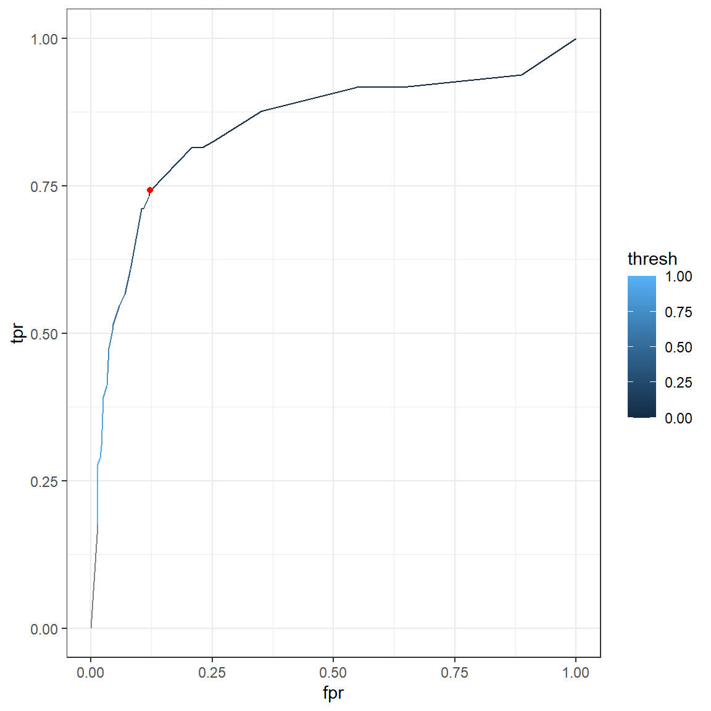
Logistic Regression:
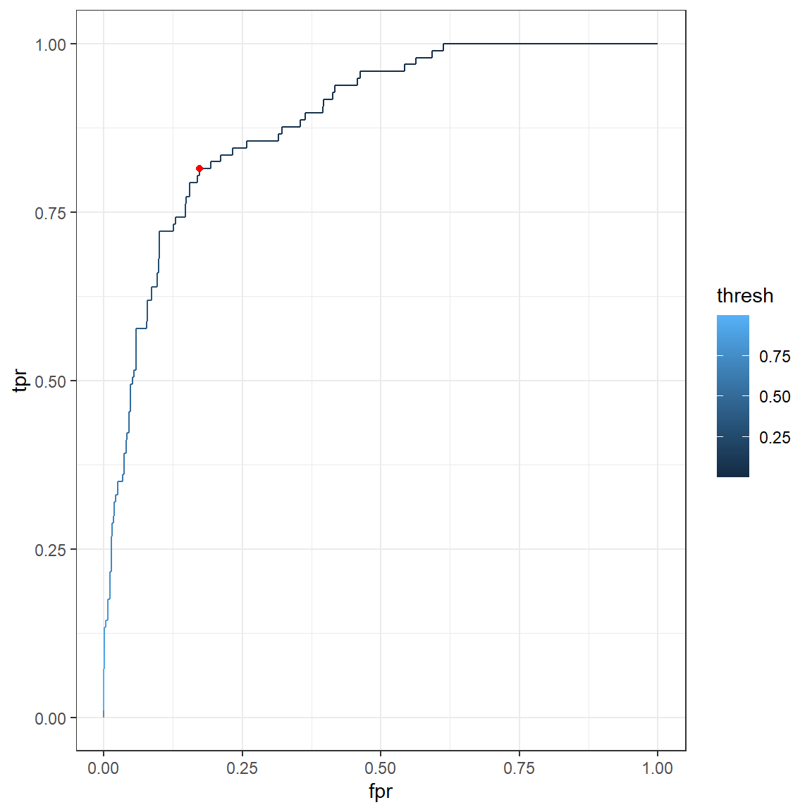
Overall, it seems like using the first four principal components did not improve neither the decision tree or logistic regression model. This could be due to many factors but the main one I can think of is that the first four PCs only capture 59% of the variance in the variables. The decision tree did not make sense to use even if it had a better misclassification rate as the interpretability of the tree did not as much sense as the model with all variables. While the logistic model did have all significant predictors, the error rate was much higher than the model with all variables, but less predictors were used. In the future, I would select variables based on theory, use PCA to reduce the dimensions and capture more variance than I did now, and then re-run the model.